📷 Lesson 20: Camera Basics
Welcome to the art of virtual cinematography! The camera is your eye into the 3D world—it determines what your audience sees and how they experience your creation. Just like a real photographer or cinematographer, you control focal length, framing, position, and more to tell your visual story. A perfectly lit, beautifully modeled scene can be ruined by poor camera work, while a simple scene can become stunning with excellent camera choices. In this lesson, you'll learn the fundamental camera settings and techniques that separate amateur renders from professional work. You'll understand how focal length affects perspective, how to frame shots like a cinematographer, and how to position cameras for maximum impact. Master these basics, and your renders will instantly look more polished and intentional.
🎯 What You'll Learn
- Understanding camera fundamentals in 3D
- Camera settings and properties in Blender
- Focal length and how it affects perspective
- Sensor size and aspect ratios
- Camera positioning and orientation
- Framing techniques (rule of thirds, composition)
- Camera constraints for easier control
- Multiple cameras and switching between them
- Safe frames and render borders
- Common camera mistakes and how to avoid them
- Hands-on camera setup project
⏱️ Estimated Time: 50-65 minutes
🎯 Project: Create multiple camera setups for a scene
In This Lesson
📷 Camera Fundamentals
Before diving into Blender's camera settings, let's understand what cameras do and why they're essential for every 3D project.
What is a Camera in 3D?
👁️ The Virtual Viewpoint
Camera definition:
- A camera defines what gets rendered
- It's your "eye" into the 3D scene
- Everything outside camera view is not rendered
- Simulates real-world camera or human vision
Why cameras are essential:
- Frame the shot: Choose what audience sees
- Control perspective: Wide-angle vs telephoto effects
- Set render dimensions: Aspect ratio and resolution
- Enable effects: Depth of field, motion blur
- Tell stories: Camera angle conveys mood and meaning
Real-world analogy:
- Your 3D scene is like a movie set
- The camera is like a film camera or photographer's camera
- You position it, adjust settings, then "photograph" the scene
- Everything you learned about photography applies here
Camera vs Viewport
🖥️ Understanding the Difference
Viewport (navigation view):
- Your interactive 3D workspace
- Free to move and rotate anywhere
- Used for modeling, lighting, positioning objects
- Does NOT determine final render
- Think: "Construction site" view
Camera view:
- Fixed viewpoint that renders
- What audience will see in final image
- Activate with
Numpad 0 - Shows exact framing of render
- Think: "Final photograph" view
Workflow:
- Work in viewport to build scene
- Switch to camera view to compose shot
- Adjust camera position/settings
- Render captures camera view
Common beginner mistake:
- Spending time perfecting viewport angle
- Rendering and seeing different view (camera!)
- Solution: Always check camera view before rendering
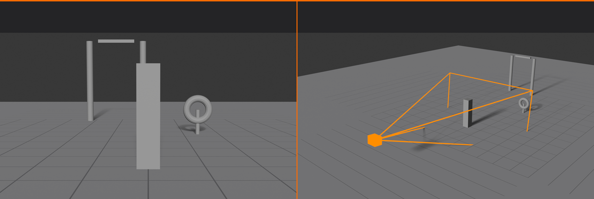
Types of Camera Views
🎬 Camera Terminology
Common shot types (distance):
- Extreme Wide Shot (EWS): Shows environment, context
- Wide Shot (WS): Subject with surroundings
- Medium Shot (MS): Subject from waist up (for characters)
- Close-Up (CU): Face or object detail
- Extreme Close-Up (ECU): Eyes, texture details
Camera angles (vertical position):
- Eye level: Neutral, objective viewpoint
- High angle: Camera above subject (makes subject small)
- Low angle: Camera below subject (makes subject powerful)
- Bird's eye: Directly overhead
- Dutch angle: Tilted camera (creates tension)
Psychological impact:
- Low angle = Power, dominance, importance
- High angle = Vulnerability, weakness, overview
- Eye level = Neutral, relatable, conversational
- Close-up = Intimacy, detail, emotion
- Wide shot = Context, scale, isolation
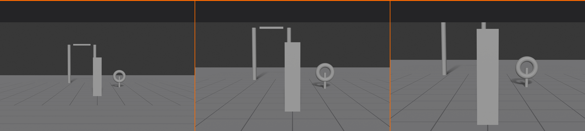
Default Camera in Blender
📸 Starting Camera
Default scene includes:
- One camera object (pyramid wireframe)
- Positioned at specific location
- Aimed at origin (0, 0, 0)
- Ready to use immediately
Camera object appearance:
- Pyramid/trapezoid wireframe
- Shows field of view
- Dashed lines show view frustum
- Solid line shows frame border
- Triangle indicates "top" of image
Selecting the camera:
- Click on camera object in viewport
- Or select in Outliner
- Selected camera has orange outline
- Active camera (renders) has solid triangle marker
Viewing through camera:
- Press
Numpad 0(enters camera view) - Or View menu → Cameras → Active Camera
- Border shows render frame
- Everything outside border won't render
- Press
Numpad 0again to exit camera view
💡 Photography Transfers to 3D: Everything you know about photography applies directly to 3D cameras. Focal length, aperture, exposure triangle, composition rules—it all works the same way. The difference? In 3D, you have perfect control over every element. No weather delays, no equipment limitations, no physics constraints. You can position the camera anywhere, even inside objects or underwater. But with this freedom comes responsibility: understanding real camera principles helps you make choices that feel natural and cinematic rather than random and artificial.
⚙️ Camera Properties in Blender
Blender's cameras have numerous settings that control how they capture your scene. Let's explore each property and what it does.
Accessing Camera Settings
🎛️ Camera Properties Panel
Location:
- Select camera object
- Properties panel (right side) → Camera Properties (camera icon)
- All camera settings organized in sections
Main sections:
- Lens: Focal length, sensor size, perspective
- Depth of Field: Focus and blur effects
- Viewport Display: How camera appears in viewport
- Background Images: Reference images in camera view
- Safe Areas: Composition guides
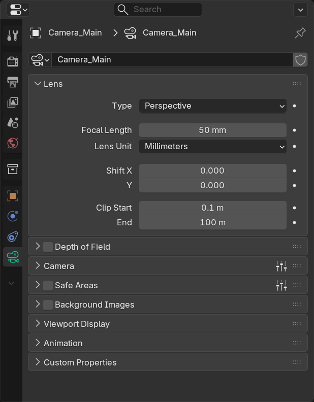
Camera Type
📐 Projection Types
Camera Properties → Type:
- Perspective (default):
- Realistic camera simulation
- Objects closer appear larger (perspective)
- Parallel lines converge at distance
- Use for: 99% of renders
- Orthographic:
- No perspective distortion
- Objects same size regardless of distance
- Parallel lines stay parallel
- Use for: Technical drawings, schematics, blueprints
- Panoramic:
- 360-degree capture
- Equirectangular or fisheye
- Use for: VR, HDRIs, panoramic renders
When to use orthographic:
- Architectural plans (top view)
- Technical illustrations
- UI mockups and flat graphics
- Isometric game art
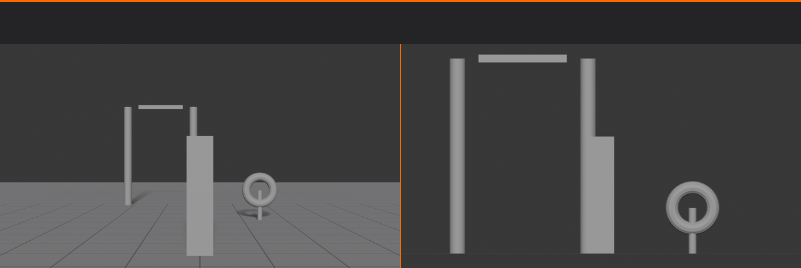
Lens Settings
🔍 Focal Length
What is focal length?
- Measured in millimeters (mm)
- Determines field of view (how much you see)
- Affects perspective and object proportions
- Default: 50mm (mimics human eye)
Focal length categories:
- Ultra-wide (12-24mm):
- Very wide field of view
- Dramatic perspective distortion
- Use for: Architecture exteriors, vast landscapes
- Wide-angle (24-35mm):
- Wide field of view
- Noticeable perspective
- Use for: Interiors, environmental shots
- Standard (35-55mm):
- Natural perspective
- Mimics human vision
- Use for: General purpose, product shots
- Portrait (85-135mm):
- Flattering perspective
- Compressed depth
- Use for: Character close-ups, portraits
- Telephoto (135mm+):
- Narrow field of view
- Extreme compression
- Use for: Distant subjects, abstract compositions
Common focal lengths:
- 18mm: Extreme wide-angle
- 24mm: Wide-angle interiors
- 35mm: Environmental portraits
- 50mm: Standard/normal lens
- 85mm: Portrait lens
- 135mm: Telephoto compression
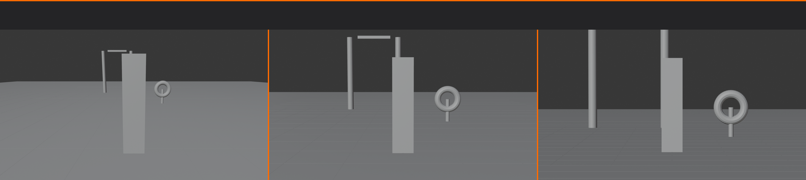
Sensor and Film Settings
🎞️ Sensor Size
What is sensor size?
- Physical size of camera sensor/film
- Measured in millimeters (width)
- Affects field of view with focal length
- Default: 36mm (full-frame equivalent)
Common sensor sizes:
- Full Frame (36mm): Standard cinema/DSLR
- Super 35 (24mm): Cinema standard
- APS-C (23.5mm): Crop sensor cameras
- Micro 4/3 (17mm): Compact cameras
Sensor size presets:
- Camera Properties → Sensor → Preset dropdown
- Options: Various camera formats
- Usually leave at default unless matching specific camera
Sensor fit:
- Auto: Automatically fits to render aspect
- Horizontal: Fits width, height adjusts
- Vertical: Fits height, width adjusts
- Usually leave on Auto
Clipping
✂️ Near and Far Clipping
What is clipping?
- Defines visible distance range
- Objects closer than "Clip Start" invisible
- Objects farther than "Clip End" invisible
- Optimization for complex scenes
Clip Start:
- Default: 0.1 Blender units
- Minimum distance camera can see
- Increase if camera penetrates objects
- Typical range: 0.01 - 1.0
Clip End:
- Default: 100 Blender units
- Maximum distance camera can see
- Increase for very large scenes
- Decrease to optimize complex scenes
When to adjust:
- Objects disappearing near camera: Increase Clip Start
- Distant objects invisible: Increase Clip End
- Z-fighting artifacts: Adjust Clip Start/End ratio
- Usually defaults work fine
🔍 Focal Length and Perspective
Focal length is one of the most powerful creative tools in cinematography. Understanding how it affects perspective and composition will transform your camera work.
How Focal Length Works
📐 The Field of View
Relationship between focal length and field of view:
- Short focal length (wide-angle):
- Wide field of view (sees more)
- Must be close to subject for same framing
- Exaggerated perspective
- Example: 24mm sees ~84° horizontally
- Long focal length (telephoto):
- Narrow field of view (sees less)
- Must be far from subject for same framing
- Compressed perspective
- Example: 135mm sees ~18° horizontally
The key principle:
- Field of view = How much camera sees
- Lower mm = Wider view, camera closer
- Higher mm = Narrower view, camera farther
- Distance + focal length = perspective effect
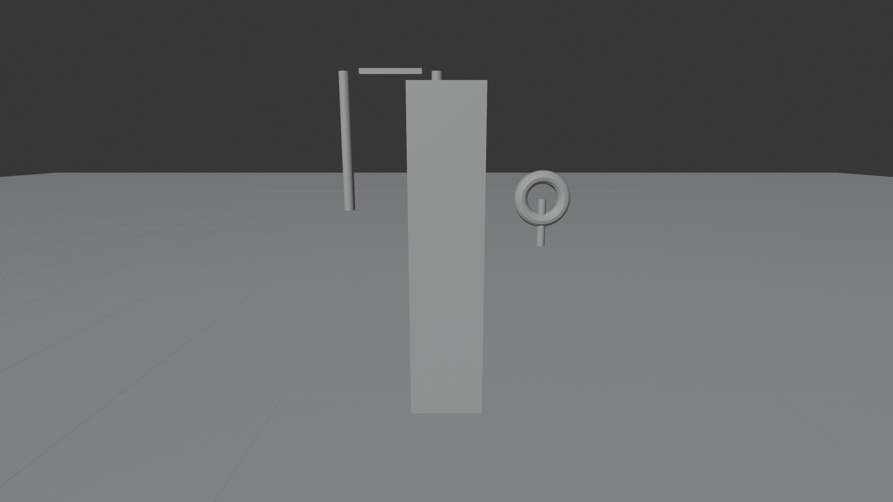
Perspective Distortion
🌀 Wide-Angle vs Telephoto
Wide-angle perspective (18-35mm):
- Characteristics:
- Exaggerated depth and distance
- Near objects appear much larger
- Far objects appear much smaller
- Parallel lines converge dramatically
- Effects:
- Rooms look bigger and deeper
- Faces can look distorted up close
- Dynamic, energetic feeling
- Emphasizes foreground
- Use for:
- Architecture interiors
- Cramped spaces (makes them feel larger)
- Action scenes (dynamic feel)
- Establishing shots showing environment
Telephoto perspective (85mm+):
- Characteristics:
- Compressed depth (layers look flatter)
- Background appears closer to foreground
- Objects at different distances look similar size
- Minimal perspective distortion
- Effects:
- Flattering for faces (no nose distortion)
- Background more prominent, less blurred
- Intimate, focused feeling
- Isolates subject from environment
- Use for:
- Portrait and character close-ups
- Product detail shots
- Compressing busy backgrounds
- Creating abstract compositions
Normal focal length (40-55mm):
- Balanced perspective (neutral)
- Mimics human vision
- Neither exaggerated nor compressed
- Most natural, comfortable viewing
- Use for general-purpose shots
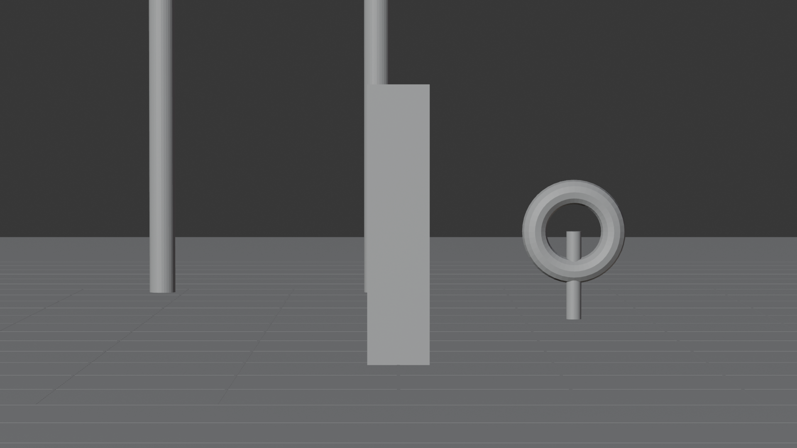
Choosing Focal Length
🎯 Creative Decisions
Consider these factors:
- Subject matter:
- Architecture: Wide-angle (24-35mm)
- Portraits: Portrait lens (85-135mm)
- Products: Standard to portrait (50-85mm)
- Landscapes: Wide to standard (24-50mm)
- Mood and story:
- Dynamic action: Wide-angle
- Intimate moment: Telephoto
- Neutral observation: Standard
- Dramatic intensity: Telephoto
- Space constraints:
- Tight space: Must use wide-angle
- Distant subject: Must use telephoto
- Flexible space: Choose creatively
- Depth perception:
- Want depth: Wide-angle
- Want compression: Telephoto
- Natural depth: Standard
Adjusting Focal Length in Blender
⚙️ Practical Adjustment
Method 1: Direct value entry
- Select camera
- Camera Properties → Lens → Focal Length
- Type desired value (e.g., 35, 50, 85)
- See immediate result in camera view
Method 2: Interactive adjustment in viewport
- Enter camera view (
Numpad 0) - Press
G(orShift+Ffor fly mode) - Move mouse to zoom in/out
- Adjust focal length to reframe
- Click to confirm
Quick focal length presets:
- 18mm: Dramatic wide-angle
- 24mm: Wide interior
- 35mm: Reportage/street
- 50mm: Standard
- 85mm: Portrait
- 135mm: Compressed telephoto
- 200mm: Strong compression
Testing focal lengths:
- Frame subject same in each test
- Try 24mm, 50mm, 135mm
- Notice how background changes
- Choose based on desired effect
✅ Focal Length Quick Reference
Common scenarios and recommended focal lengths:
- Architecture exterior: 18-24mm
- Architecture interior: 24-35mm
- Product on table: 50-85mm
- Character full body: 35-50mm
- Character head shot: 85-135mm
- Jewelry/small detail: 85-135mm (macro feel)
- Landscape/environment: 24-50mm
- Abstract/pattern: 135-200mm
💡 The Focal Length Secret: Professional cinematographers don't choose focal length to "fit everything in frame"—they choose it for the perspective effect it creates. You can frame a subject the same size with 24mm (close) or 135mm (far away), but the feeling is completely different. Wide-angle makes the world feel vast and dynamic. Telephoto makes it feel intimate and compressed. This is why "zooming with your feet" (moving closer/farther) creates different results than changing focal length—you're changing perspective, not just magnification.
🎯 Camera Positioning Techniques
Knowing where and how to position your camera is fundamental to good cinematography. Let's master camera movement and placement.
Moving the Camera
🚀 Basic Camera Movement
Method 1: Transform tools (precise)
- Move (G):
- Select camera
- Press
Gto grab/move - Constrain to axis:
X,Y, orZ - Type number for exact distance
- Click to confirm
- Rotate (R):
- Press
Rto rotate - Constrain to axis:
X,Y, orZ - Type angle in degrees
- Click to confirm
- Press
Method 2: Interactive camera navigation
- Walk mode:
- Enter camera view (
Numpad 0) - Press
Shift+`(tilde) - WASD keys to move like FPS game
- Mouse to look around
- Click to exit
- Enter camera view (
- Lock camera to view:
- Enter camera view
- Press
N→ View tab → Lock Camera to View (checkbox) - Now viewport navigation moves camera
- Very intuitive for positioning
- Disable when done to prevent accidental movement
Method 3: Properties panel (numeric)
- Select camera
- Properties → Object Properties (orange cube icon)
- Transform section
- Enter exact Location and Rotation values
- Perfect for matching specific coordinates
Aiming the Camera
🎯 Pointing at Your Subject
Method 1: Manual rotation
- Select camera
- Press
Rto rotate - Visual feedback in viewport
- Adjust until aimed correctly
Method 2: Camera to View
- Navigate viewport to desired angle
- Select camera
Ctrl+Alt+Numpad 0- Camera snaps to current view
- Or: View menu → Align View → Align Active Camera to View
Method 3: Track To constraint (automatic aiming)
- Select camera
- Object Properties → Constraints → Add Constraint → Track To
- Target: Select object to track
- To: -Z (camera's forward direction)
- Up: Y
- Camera now always points at target
- Move target = camera follows
When to use each method:
- Manual: Quick adjustments, static shots
- Camera to View: Matching specific viewport angle
- Track To: Animated subjects, orbit shots
Camera Height and Angle
📐 Vertical Position Psychology
Eye level (neutral):
- Camera at subject's eye height
- Objective, documentary feel
- Viewer as equal observer
- Most common for general shots
- Use as default, deviate with purpose
Low angle (powerful):
- Camera below subject, looking up
- Makes subject appear:
- → Powerful, dominant, intimidating
- → Important, heroic, larger-than-life
- Dramatic sky/ceiling backgrounds
- Use for: Hero shots, authority figures
High angle (vulnerable):
- Camera above subject, looking down
- Makes subject appear:
- → Vulnerable, weak, insignificant
- → Submissive, defeated, small
- Ground/floor prominent in frame
- Use for: Showing weakness, isolation
Bird's eye (overview):
- Camera directly overhead
- Looking straight down
- Graphic, map-like composition
- Removes normal perspective
- Use for: Maps, patterns, abstract views
Dutch angle (tension):
- Camera tilted (rolled on Z-axis)
- Horizon line diagonal
- Creates unease, instability
- Use sparingly for dramatic effect
- Use for: Chaos, disorientation, tension
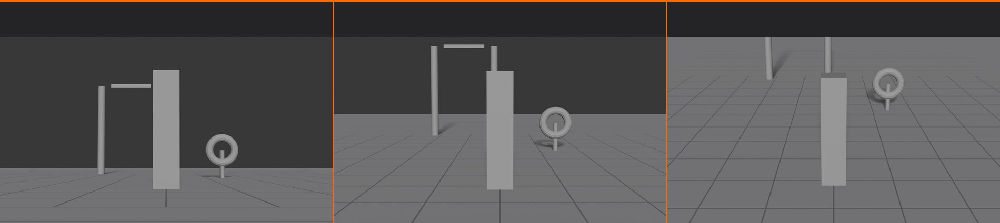
Camera Distance
📏 Proximity and Intimacy
Extreme wide shot:
- Subject small in frame
- Environment dominates
- Emphasizes scale, isolation
- Use for: Establishing context, showing environment
Wide shot:
- Full subject with surroundings
- Shows subject in context
- Comfortable viewing distance
- Use for: Action, movement, spatial relationships
Medium shot:
- Subject from waist up (for characters)
- Balanced subject and background
- Comfortable for dialogue
- Use for: Conversations, product showcases
Close-up:
- Face or object fills frame
- Emphasizes detail and emotion
- Creates intimacy
- Use for: Emotional moments, product details
Extreme close-up:
- Eyes, hands, tiny details
- Maximum intimacy and focus
- Abstract quality
- Use for: Texture, emotion emphasis, drama
The Rule of Thirds in Camera Positioning
📏 Compositional Guides
Enabling composition guides:
- Camera Properties → Viewport Display
- Composition Guides dropdown
- Select "Rule of Thirds"
- Grid overlay appears in camera view
Using the rule of thirds:
- Image divided into 9 equal rectangles
- 4 intersection points = "power points"
- Place important elements on these points
- Or align with grid lines
- Creates balanced, professional composition
Common applications:
- Eyes on top horizontal line
- Horizon on top or bottom line (not center)
- Subject on left or right vertical line
- Products at intersection points
Other composition guides available:
- Center: Crosshair center marker
- Center Diagonal: X from corners
- Triangle A/B: Triangular composition
- Harmony A/B: Golden ratio guides
- Golden Triangle: Diagonal lines
🖼️ Framing and Composition
Great camera positioning isn't just about where the camera is—it's about what's in the frame and how it's arranged.
Basic Composition Principles
🎨 Foundational Rules
Rule of thirds (revisited):
- Don't center everything
- Off-center creates interest
- Place subjects on intersections
- Leave "looking space" (empty space in look direction)
Balance:
- Visual weight distribution
- Symmetrical: Same on both sides (formal, stable)
- Asymmetrical: Different but balanced (dynamic, interesting)
- Heavy elements balanced by smaller elements opposite
Leading lines:
- Lines that guide viewer's eye
- Roads, fences, edges, beams
- Lead toward subject
- Create depth and direction
Framing within frame:
- Use elements to frame subject
- Doorways, windows, arches
- Natural vignette effect
- Draws focus to subject
Depth:
- Foreground, middle ground, background
- Creates 3D feel in 2D image
- Place elements at different depths
- Use depth of field to separate layers
Negative Space
⬜ Empty Space as Design Element
What is negative space?
- Empty areas in composition
- Space around subject, not occupied by subject
- Can be background, sky, floor, walls
Purpose of negative space:
- Focus: Isolates subject
- Breathing room: Prevents cluttered feel
- Elegance: Minimalist, clean aesthetic
- Direction: Shows where subject is moving/looking
How much negative space?
- Minimal: Tight crop, dramatic, intense
- Moderate: Balanced, comfortable
- Lots: Isolated, minimalist, spacious
- More negative space = more isolation/focus
Placement with negative space:
- Leave space in direction subject faces
- Leave space above head (headroom)
- Leave space for movement direction
- Avoid cramming subject against edge
Aspect Ratio
📐 Frame Proportions
What is aspect ratio?
- Width-to-height ratio of image
- Example: 16:9 means 16 units wide, 9 units tall
- Determines frame shape
- Set in Output Properties (not camera)
Common aspect ratios:
- 16:9 (1.78:1):
- HD video standard
- YouTube, TV, most video content
- Wide, cinematic feel
- 4:3 (1.33:1):
- Classic TV/monitor
- More square, retro feel
- Less common now
- 2.39:1 (Cinemascope):
- Ultra-wide cinematic
- Feature films
- Very dramatic, letterbox
- 1:1 (Square):
- Instagram posts
- Graphic feel
- Symmetrical composition
- 9:16 (Vertical):
- Mobile/social media
- Instagram Stories, TikTok
- Portrait orientation
Setting aspect ratio:
- Output Properties → Format → Resolution X and Y
- Or use Resolution % to maintain ratio
- Examples:
- 1920 x 1080 = 16:9
- 1920 x 1920 = 1:1
- 1080 x 1920 = 9:16
Headroom and Looking Room
👤 Character Framing
Headroom:
- Space above subject's head
- Too much: Subject lost in frame, awkward
- Too little: Cramped, claustrophobic
- Just right: Comfortable, professional
- General rule: Small gap between head and top frame
Looking room (nose room):
- Space in direction subject is facing/looking
- More space in front than behind
- Allows viewer to see what subject sees
- Creates comfortable, natural composition
Lead room:
- Similar to looking room but for movement
- Space in direction subject is moving
- Shows where subject is going
- Prevents feeling of "bumping into" frame edge
Breaking the rules intentionally:
- Excessive headroom: Isolation, insignificance
- No headroom: Pressure, claustrophobia
- No looking room: Trapped, uncomfortable
- Use violations to create specific feelings
🎬 Working with Multiple Cameras
Professional scenes often use multiple cameras to capture different angles and shots. Blender makes it easy to set up, switch between, and manage multiple cameras in your scene.
Why Use Multiple Cameras?
📹 Benefits of Multi-Camera Setups
Common scenarios:
- Product visualization:
- Front view, side view, detail view
- Different angles for marketing materials
- Quick switching without repositioning
- Architectural walkthrough:
- Multiple room views
- Interior and exterior shots
- Different perspectives of same space
- Character showcase:
- Full body, close-up, profile
- Different emotional moments
- Turnaround views
- Scene variations:
- Wide establishing shot
- Medium character interaction
- Close-up emotional moment
- Each tells different part of story
Advantages:
- Save time - no repositioning between renders
- Maintain consistency across shots
- Easily compare different angles
- Professional workflow standard
- Animation-ready (can switch cameras mid-animation)
Adding Cameras to Your Scene
➕ Creating Additional Cameras
Method 1: Add menu
- Position 3D cursor where you want camera
Shift+A→ Camera- New camera appears at cursor location
- Camera faces default direction (down negative Y-axis)
Method 2: Duplicate existing camera
- Select existing camera
Shift+D(duplicate)- Move to new position
- Click to confirm
- Maintains all settings from original camera
Method 3: From viewport position
- Navigate viewport to desired camera angle
Shift+A→ Camera- Select new camera
Ctrl+Alt+Numpad 0(align to view)- Camera now matches your viewport angle
Naming your cameras:
- Select camera
- Press
F2or double-click name in Outliner - Use descriptive names:
- "Camera_Wide"
- "Camera_CloseUp"
- "Camera_Front"
- "Camera_Detail"
- Good naming = easier management
Switching Between Cameras
🔄 Active Camera Selection
The active camera:
- Only ONE camera active at a time
- Active camera = what renders
- Marked with solid triangle marker in viewport
- Inactive cameras show hollow triangle
Method 1: Make active from selection
- Select desired camera in viewport or Outliner
Ctrl+Numpad 0- Camera becomes active
- Viewport switches to that camera view
Method 2: Scene properties
- Scene Properties (scene icon) → Camera
- Dropdown shows all cameras in scene
- Select camera from list
- That camera becomes active
Method 3: Quick switching in camera view
- Enter camera view (
Numpad 0) - Select different camera object
Ctrl+Numpad 0- View immediately switches to new camera
Viewing non-active cameras:
- Select inactive camera
- View → Cameras → "Active Camera" is current active
- Or manually navigate to camera's position
- Press
Numpad 0to snap to active camera
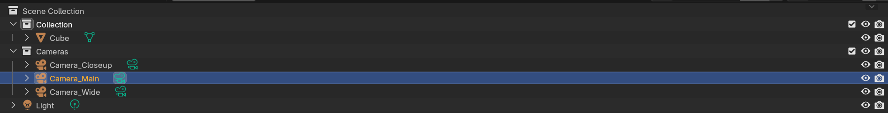
Camera Collections
📁 Organizing Multiple Cameras
Why organize cameras?
- Scenes with 5+ cameras get cluttered
- Hard to find specific camera
- Solution: Use collections
Creating a camera collection:
- In Outliner, click "New Collection" button
- Name it "Cameras"
- Drag all camera objects into this collection
- Toggle collection visibility to hide/show all cameras
Benefits of camera collections:
- All cameras grouped together
- Easy to hide camera objects while working
- Toggle visibility without affecting render
- Professional scene organization
Sub-collections for complex scenes:
- Create sub-collections by type:
- "Cameras_Wide"
- "Cameras_CloseUp"
- "Cameras_Product"
- Helps when scene has 10+ cameras
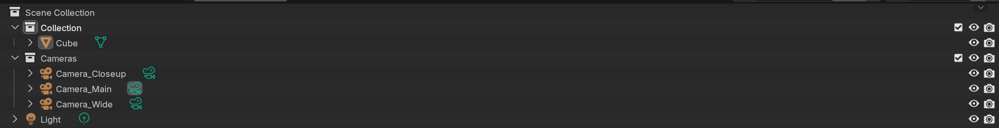
Camera Markers (Timeline)
🎞️ Animated Camera Switching
What are camera markers?
- Timeline markers that bind to cameras
- Automatically switch active camera at specific frames
- Essential for animation sequences
- Like editing cuts in film
Setting up camera markers:
- Open Timeline editor (bottom of screen)
- Position playhead at frame where camera should switch
- Select camera you want active at that frame
- Marker menu → Bind Camera to Markers
- Or:
Ctrl+Bin timeline with camera selected
Workflow example:
- Frame 1-50: Wide shot (Camera_Wide)
- Frame 51-100: Close-up (Camera_CloseUp)
- Frame 101-150: Side view (Camera_Side)
- Set marker at frame 1, 51, 101 with respective cameras
- Animation automatically switches cameras
Managing markers:
- Markers appear as small triangles in timeline
- Name shows bound camera
- Drag to move marker (changes timing)
Xto delete marker- Right-click → Rename to change marker name
✅ Multi-Camera Best Practices
Professional tips:
- Name systematically: Use prefixes like "CAM_01_Wide", "CAM_02_Medium"
- Consistent settings: Match focal length within a sequence for continuity
- Save camera angles: Don't delete cameras—keep all angles for future use
- Test all cameras: Check each camera view before final render batch
- Render organization: Output each camera to separate folder or filename
- Documentation: Add notes about what each camera is for (use Text objects or external doc)
💡 The Director's Toolkit: Professional cinematographers and directors work with multiple cameras simultaneously on film sets—a wide shot capturing the whole scene, close-ups for emotional beats, and detail shots for key moments. In 3D, you have the same power but with infinite cameras and zero additional cost. Set up your scene like a real film shoot: establish your master shot (wide), your coverage (medium), and your inserts (close-ups). Then you can "edit" your scene by switching between cameras, just like cutting between footage. This workflow mirrors real filmmaking and trains you to think cinematically about your 3D work.
🔗 Camera Constraints
Constraints are powerful tools that automate camera behavior and make complex camera movements simple to set up. They're your secret weapon for professional camera control.
What Are Constraints?
⚙️ Automated Camera Behavior
Constraint definition:
- Rules that control object properties automatically
- For cameras: control position, rotation, or both
- React to other objects or follow rules
- Non-destructive (can disable/remove anytime)
Why use camera constraints?
- Easier than manual keyframing
- Camera automatically follows target
- Complex movements simplified
- Maintain relationships between camera and subject
- Professional cinematography techniques automated
Accessing constraints:
- Select camera
- Object Properties → Constraints (chain link icon)
- Add Constraint → Choose type
- Configure constraint parameters
Track To Constraint
🎯 Always Aim at Target
What it does:
- Makes camera always point at target object
- Target moves = camera automatically reorients
- Perfect for following moving subjects
- Most commonly used camera constraint
Setting up Track To:
- Select camera
- Object Properties → Constraints → Add Constraint → Track To
- Target: Choose object to track (e.g., character, product)
- To: Set to
-Z(camera's forward direction) - Up: Set to
Y(camera's up direction) - Camera now automatically aims at target
Use cases:
- Character following: Camera tracks animated character
- Product turntable: Camera stays aimed at rotating product
- Orbit shots: Camera circles subject while tracking
- Dolly shots: Camera moves while maintaining aim
Track To + Empty object trick:
- Add Empty object (
Shift+A→ Empty) - Position Empty at point of interest
- Make camera Track To the Empty
- Animate Empty position = camera follows smoothly
- More control than tracking actual subject
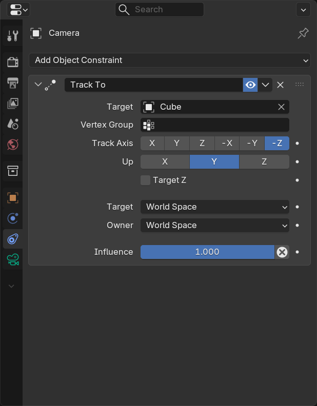
Follow Path Constraint
🛤️ Camera on Rails
What it does:
- Makes camera follow a curve path
- Creates smooth camera movements
- Simulates camera dolly, crane, drone shots
- Perfect for animated camera moves
Setting up Follow Path:
- Create Bezier Curve:
Shift+A→ Curve → Bezier - Edit curve to desired camera path shape
- Select camera
- Add Constraint → Follow Path
- Target: Select your curve
- Enable "Follow Curve" to orient camera along path
- Animate "Offset Factor" 0 to 1 for full path travel
Combining with Track To:
- Camera follows path (Follow Path constraint)
- Camera aims at subject (Track To constraint)
- Add both constraints to same camera
- Order matters: Follow Path first, Track To second
- Result: Smooth dolly shot while tracking subject
Common path movements:
- Dolly in: Straight path toward subject
- Dolly out: Straight path away from subject
- Arc/orbit: Circular path around subject
- Crane up: Vertical ascending path
- Fly through: Complex curved path through scene
Copy Location/Rotation Constraints
📋 Mirror Another Object
Copy Location:
- Camera copies position of target object
- Target moves = camera moves identically
- Can offset to maintain distance
- Use for: Matching camera to animated empty
Copy Rotation:
- Camera copies rotation of target object
- Target rotates = camera rotates same way
- Use for: Syncing camera angle to animated object
Practical example - First Person View:
- Create character with head bone/empty
- Camera Copy Location from head
- Camera Copy Rotation from head
- Add offset in Copy Location (slightly forward)
- Camera now moves exactly with character's head
- Perfect first-person perspective
Limit Location/Rotation Constraints
🚧 Boundary Controls
Limit Location:
- Restricts camera position to specific area
- Set min/max values for X, Y, Z axes
- Camera can't move beyond boundaries
- Use for: Keeping camera within room, preventing wall penetration
Limit Rotation:
- Restricts camera rotation angles
- Set min/max degrees for each axis
- Prevents camera from tilting too far
- Use for: Natural looking camera movement, avoiding unrealistic angles
Example - Security Camera:
- Position camera at security camera location
- Add Limit Rotation constraint
- Limit Z rotation: -45° to +45° (90° sweep)
- Animate rotation within allowed range
- Camera behaves like real security camera with limited motion
Child Of Constraint
👶 Parent-Child Relationship
What it does:
- Makes camera move with parent object
- Like parenting but with more control
- Can animate the relationship on/off
- Can control which properties inherit (location, rotation, scale)
Setting up Child Of:
- Select camera
- Add Constraint → Child Of
- Target: Select parent object
- Click "Set Inverse" button (important!)
- Camera now follows parent
Use cases:
- Vehicle camera: Child of car, moves with car
- Handheld camera: Child of character hand bone
- Mounted camera: Child of wall, room, equipment
- Multi-part rigs: Camera attached to complex animated rig
Influence slider:
- Controls strength of constraint (0-1)
- 1.0 = Full effect, camera completely follows parent
- 0.5 = Partial effect, camera follows halfway
- 0.0 = No effect, constraint disabled
- Can animate influence for gradual attach/detach
✅ Constraint Combination Tips
Powerful constraint combinations:
- Orbit shot: Follow Path (circular) + Track To (center object)
- Crane shot: Follow Path (vertical arc) + Track To (subject)
- Dolly zoom: Follow Path (toward subject) + Track To + animate focal length
- Handheld cam: Child Of (character bone) + Track To (empty with wiggle animation)
- Security camera: Limit Rotation + Track To + subtle animated rotation
Pro workflow:
- Start with empty objects (not camera directly)
- Constrain/animate empties
- Parent camera to master empty
- Gives you non-destructive control layers
- Can adjust camera without breaking constraints
💡 Constraints: From Manual to Automated: Imagine trying to manually keyframe a camera to track a character walking through a scene—you'd need hundreds of rotation keyframes to keep the camera aimed correctly. With a Track To constraint, it happens automatically, no matter how the character moves. Constraints transform tedious, error-prone manual work into elegant, automatic behaviors. They're especially powerful when combined: a camera following a path while tracking a subject while limited in its rotation creates sophisticated cinematography with just a few clicks. Think of constraints as hiring a professional camera operator who knows exactly what to do—you just tell them the rules, and they handle the details.
💡 Camera Tips and Tricks
Now that you understand camera fundamentals, let's explore professional techniques, shortcuts, and hidden features that will level up your camera work.
Viewport Display Settings
👁️ Camera Visualization Options
Camera Properties → Viewport Display:
- Limits:
- Shows clipping start/end planes
- Red lines indicate what's visible
- Helps debug objects disappearing
- Mist:
- Visualizes fog distance range
- Shows where mist starts/ends
- Useful when setting up atmospheric effects
- Sensor:
- Shows sensor dimensions in viewport
- Helps understand field of view
- Useful for technical camera matching
- Name:
- Displays camera name in 3D view
- Essential with multiple cameras
- Helps identify which camera is which
Size setting:
- Controls camera object display size in viewport
- Doesn't affect render or camera function
- Make larger for easier selection in complex scenes
- Make smaller to reduce viewport clutter
Passepartout:
- Darkens area outside camera frame
- Camera Properties → Viewport Display → Passepartout
- Alpha slider: 0 = no darkening, 1 = fully black
- Helps focus on what will render
- Typical value: 0.5-0.7
Composition Guides
📐 Visual Framing Aids
Enabling guides (in camera view):
- Camera Properties → Viewport Display → Composition Guides
- Choose from multiple guide types
- Overlays appear in camera view only
- Doesn't render—just for composition help
Available guides:
- Rule of Thirds:
- 9-section grid
- Place subjects on intersections
- Most commonly used guide
- Center:
- Simple crosshair at center
- Quick centering reference
- Minimal, unobtrusive
- Center Diagonal:
- X from corner to corner
- Helps with diagonal compositions
- Dynamic energy placement
- Triangle A/B:
- Triangular composition guides
- Based on golden triangle
- Creates dynamic balance
- Harmony A/B:
- Golden ratio divisions
- More precise than rule of thirds
- Classic fine art composition
- Golden Triangle A/B:
- Diagonal lines dividing frame
- Creates movement and flow
- Good for landscape compositions
Using guides effectively:
- Start with Rule of Thirds (most versatile)
- Switch guides to find best composition
- Use as suggestions, not rigid rules
- Intentionally break rules for effect
- Turn off when composition is finalized
Safe Areas
📺 Broadcast and Screen Safe Zones
What are safe areas?
- Boundaries showing what's visible on different displays
- Important for TV, film, streaming content
- Accounts for overscan and cropping
- Ensures critical content isn't cut off
Enabling safe areas:
- Camera Properties → Viewport Display → Safe Areas (checkbox)
- Shows two rectangles in camera view
- Outer = action safe, Inner = title safe
Action safe area (outer box):
- Keep all important action within this boundary
- Typically 90-95% of frame
- Prevents edge cropping on different screens
- Essential content must be here
Title safe area (inner box):
- Keep text and graphics within this boundary
- Typically 80-90% of frame
- Ensures readability on all displays
- More conservative than action safe
When to use safe areas:
- TV broadcast content
- Film festival submissions
- Professional video production
- Any project with text/titles
- Not critical for web-only content
Background Images
🖼️ Reference Images in Camera View
What are background images?
- Reference photos visible in camera view
- Helps match real-world footage or references
- Doesn't render—only visible while working
- Professional technique for camera matching
Adding background image:
- Select camera
- Camera Properties → Background Images
- Check "Background Images" box
- Click "Add Image"
- Choose image file or movie clip
- Image appears in camera view behind scene
Background image settings:
- Opacity: How transparent image is (0-1)
- Display Depth:
- Back: Behind all objects (default)
- Front: In front of objects
- Frame Method:
- Stretch: Fills frame (may distort)
- Fit: Fits in frame (maintains aspect)
- Crop: Crops to fill frame
- Offset X/Y: Shift image position
- Scale: Resize image
Use cases:
- Camera matching: Match CG camera to photo
- Architecture: Model over blueprint/photo
- VFX: Integrate CG with real footage
- Concept reference: Keep concept art visible while modeling
- Rotoscoping: Trace over reference footage
Lock Camera to View
🔒 Intuitive Camera Positioning
What it does:
- Links viewport navigation to camera movement
- Navigate viewport = camera moves with it
- Most intuitive way to position camera
- Like moving a real camera in space
Enabling lock camera to view:
- Enter camera view (
Numpad 0) - Press
Nto open sidebar - View tab → View Lock section
- Check "Camera to View" box
- Now viewport navigation moves camera
Navigation with lock enabled:
- Middle mouse drag: Rotate camera (orbits around view center)
- Shift+Middle mouse: Pan camera (moves side to side)
- Scroll wheel: Dolly camera (moves forward/back)
- All shortcuts work as normal: Just move camera instead of view
Best practices:
- Enable when positioning camera
- Disable after camera is set (prevents accidental movement)
- Combine with Track To constraint for easy aiming
- Perfect for finding exact angle quickly
Alternative: Camera View Walking:
- In camera view, press
Shift+`(grave/tilde) - Enters walk/fly mode
- WASD to move, mouse to look
- Spacebar/V to fly up/down
- Click to exit walk mode
- Great for exploring spaces and finding angles
Render Border and Region
✂️ Partial Frame Rendering
Render border:
- Renders only selected area of frame
- Speeds up test renders dramatically
- Focus on specific detail without full render
- Essential for iterative lighting/material tests
Setting render border:
- Enter camera view
- Press
Ctrl+B - Click and drag to define border rectangle
- Border shows as white rectangle
- Render now only processes this area
Managing render border:
Ctrl+Bagain to adjust/resize borderCtrl+Alt+Bto clear border (render full frame)- Or: Camera Properties → enable/disable "Use Border"
- Border is per-camera (each camera can have different border)
Workflow tips:
- Render small border for quick material tests
- Render lighting on one area before full scene
- Test specific detail without waiting for full render
- Remember to disable before final render!
- Can save hours during iteration
Viewport render region (similar concept):
Ctrl+Bin viewport (not camera view)- Limits real-time rendering to region
- Speeds up Eevee/Cycles viewport preview
Ctrl+Alt+Bto clear
Camera Presets and Custom Properties
⚡ Quick Camera Setups
Focal length presets workflow:
- Create cameras with common focal lengths
- Name them descriptively:
- "CAM_Wide_24mm"
- "CAM_Normal_50mm"
- "CAM_Portrait_85mm"
- Position each for optimal use
- Save in asset library or startup file
- Append into new projects as needed
Creating a camera library:
- Create new .blend file
- Set up cameras with various settings:
- Wide angle camera
- Standard camera
- Portrait camera
- Telephoto camera
- Orthographic top view
- Orthographic front view
- Name each clearly
- Save file as "Camera_Library.blend"
- Append cameras into projects: File → Append → Camera_Library.blend → Object
Custom properties for organization:
- Add custom properties to cameras for metadata
- Object Properties → Custom Properties
- Add properties like:
- "Shot_Number" (e.g., "001")
- "Description" (e.g., "Wide establishing")
- "Scene_Name" (e.g., "Kitchen_Morning")
- Helps organize complex multi-camera scenes
Common Camera Mistakes
⚠️ Pitfalls to Avoid
Mistake 1: Ignoring the camera until render time
- Problem: Perfect viewport, wrong camera angle
- Solution: Check camera view (
Numpad 0) throughout process - Work in camera view for final positioning/lighting
Mistake 2: Using extreme focal lengths without reason
- Problem: 10mm or 300mm just because
- Solution: Understand what each focal length does
- Choose focal length for perspective effect, not just "fitting everything in"
Mistake 3: Centering everything
- Problem: Bull's-eye composition
- Solution: Use rule of thirds, create visual interest
- Center only when symmetry/balance is intentional
Mistake 4: No headroom or looking room
- Problem: Subjects cramped against frame edges
- Solution: Leave space above heads, in look direction
- Give subjects breathing room
Mistake 5: Camera penetrating objects
- Problem: Camera inside wall/object, weird render
- Solution: Increase Clip Start, check camera position
- View from outside camera view to see position
Mistake 6: Forgetting camera is an object
- Problem: Not using modifiers, constraints, parenting
- Solution: Treat camera like any object—constrain it, parent it, animate it
- Use empties and constraints for complex setups
Mistake 7: Not testing different angles
- Problem: Using first camera position, missing better shots
- Solution: Create multiple cameras, try various angles
- Professional photographers take hundreds of shots—you should too
Mistake 8: Inconsistent settings across cameras
- Problem: Different focal lengths/settings between related shots
- Solution: Match camera settings for shots in same sequence
- Duplicate cameras to maintain consistency
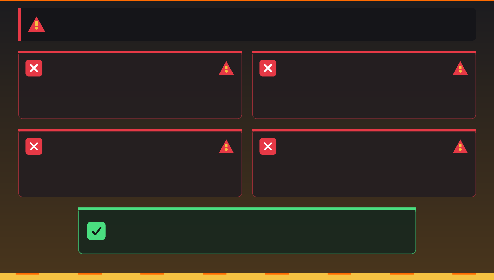
Performance Considerations
⚡ Camera Setup Optimization
Multiple cameras and performance:
- Inactive cameras have zero render cost
- Only active camera is calculated
- Can have 100+ cameras with no slowdown
- Cameras are lightweight objects
Hiding cameras in viewport:
- Hide camera objects to reduce viewport clutter
- Outliner → eye icon → hide camera
- Or put in collection and toggle collection visibility
- Doesn't affect rendering
Depth of field performance impact:
- Camera DoF increases render time
- Disable during test renders
- Enable only for final renders
- More blur = longer render (more samples needed)
Motion blur performance impact:
- Camera motion blur (if animated) adds render time
- Disable for tests, enable for finals
- Adjust shutter speed to control blur amount
✅ Professional Camera Workflow Summary
Efficient camera workflow:
- Pre-visualization: Sketch or reference similar shots
- Block cameras: Create multiple cameras for different angles
- Name systematically: Clear naming convention
- Test early: Check camera views before detailed work
- Use composition guides: Enable rule of thirds or golden ratio
- Constrain when possible: Automate aiming and movement
- Iterate: Try different focal lengths and positions
- Organize: Use collections for camera management
- Document: Note which cameras are for which shots
- Save library: Keep favorite camera setups for future projects
💡 The Camera Makes the Shot: Professional cinematographers spend years mastering camera work because they know a truth that beginners often overlook: the camera is not just a tool to "capture what's there"—it's an artistic choice that shapes how the audience experiences the story. The same scene shot with a wide-angle lens feels vast and environmental; with a telephoto lens, it feels intimate and compressed. A low camera angle empowers the subject; a high angle diminishes them. These aren't just technical differences—they're emotional and narrative choices. As you work with cameras in Blender, you're not just positioning a viewport; you're making the same creative decisions that directors and cinematographers make on professional film sets. The skills you learn here translate directly to real-world cinematography, photography, and visual storytelling.
🎯 Project: Camera Setup Showcase
Time to put everything you've learned into practice! In this project, you'll create a multi-camera scene showcasing different camera techniques, focal lengths, and compositions. This exercise will solidify your understanding of camera fundamentals and give you a portfolio piece demonstrating your cinematography skills.
Project Overview
📋 What You'll Create
The challenge:
- Set up a simple scene (doesn't need to be complex)
- Create 5 different camera setups
- Each camera demonstrates different technique or focal length
- Use composition guides and constraints
- Render comparison sheet showing all 5 angles
Learning objectives:
- Practice creating and positioning multiple cameras
- Understand focal length effects firsthand
- Apply composition principles
- Use camera constraints effectively
- Organize multi-camera workflow
Time estimate:
- Scene setup: 10-15 minutes
- Camera positioning: 15-20 minutes
- Refinement: 10-15 minutes
- Total: 35-50 minutes
Step 1: Scene Setup
🏗️ Build Your Stage
Option A: Simple product scene (recommended for beginners)
- Start with default scene (cube, light, camera)
- Scale cube to make it more interesting:
S→1.5 - Add plane below:
Shift+A→ Mesh → Plane - Scale plane large:
S→10 - Add simple materials (different colors for cube and plane)
- Optional: Bevel cube edges for more interesting look
Option B: Character/object scene
- Add Suzanne (monkey head):
Shift+A→ Mesh → Monkey - Add ground plane
- Position monkey at interesting angle
- Add background object (cube or cylinder)
- Simple lighting setup
Option C: Interior space
- Create simple room with cubes (walls, floor, ceiling)
- Add furniture placeholder (scaled cubes)
- Add focal point (main object to photograph)
- Keep it simple—focus is on cameras, not modeling
Lighting setup (keep simple):
- Use default light or add Area Light
- Position light at 45° angle from subject
- Adjust power for good visibility
- Optional: Add second fill light (lower power)
- Don't overcomplicate—this isn't a lighting lesson
Step 2: Create Your Five Cameras
📷 Camera Setup Requirements
Camera 1: Wide-Angle Environmental Shot
- Focal length: 24mm
- Purpose: Show entire scene with context
- Position: Far back, showing whole environment
- Composition: Use rule of thirds—place subject off-center
- Name: "CAM_01_Wide_24mm"
Steps:
- Select default camera (or add new one)
- Name it "CAM_01_Wide_24mm" (
F2) - Camera Properties → Lens → Focal Length → 24mm
- Position camera back far enough to see most of scene
- Aim at subject (use Track To constraint or manual rotation)
- Enable composition guides: Rule of Thirds
- Adjust position so subject on thirds intersection
- Check camera view (
Numpad 0) and refine
Camera 2: Standard "Normal" Shot
- Focal length: 50mm
- Purpose: Natural, balanced perspective
- Position: Medium distance, eye-level to subject
- Composition: Balanced, showing subject and some context
- Name: "CAM_02_Normal_50mm"
Steps:
- Duplicate Camera 1: Select it,
Shift+D - Rename to "CAM_02_Normal_50mm"
- Change focal length to 50mm
- Move closer to subject (50mm is narrower field of view)
- Frame subject to fill frame similarly to wide shot
- Notice how perspective looks more natural
- Make this camera active:
Ctrl+Numpad 0
Camera 3: Portrait/Telephoto Compression
- Focal length: 85mm or 135mm
- Purpose: Flattering close-up with compressed perspective
- Position: Far from subject, telephoto brings it close
- Composition: Subject fills frame, background compressed
- Name: "CAM_03_Telephoto_85mm"
Steps:
- Duplicate previous camera
- Rename to "CAM_03_Telephoto_85mm"
- Change focal length to 85mm (or try 135mm)
- Move camera much farther back
- Zoom in feel, but notice background looks closer
- Compare how depth feels compressed vs wide-angle
Camera 4: Low Angle "Hero" Shot
- Focal length: Your choice (35-50mm works well)
- Purpose: Make subject look powerful/important
- Position: Below subject, looking up
- Composition: Subject dominant, dramatic angle
- Name: "CAM_04_LowAngle_Hero"
Steps:
- Add new camera or duplicate existing
- Rename appropriately
- Set focal length around 35-50mm
- Position camera LOW—at ground level or below subject
- Aim upward at subject
- Notice how subject looks powerful and imposing
- Sky or ceiling becomes prominent in background
Camera 5: Creative/Experimental Shot
- Focal length: Your artistic choice
- Purpose: Show your creativity
- Position: Unique angle you haven't tried
- Composition: Break rules intentionally or use advanced guide
- Name: "CAM_05_Creative"
Ideas for Camera 5:
- Dutch angle (tilted camera)
- Extreme close-up (macro feel)
- Bird's eye view (looking straight down)
- Through another object (foreground framing)
- Unconventional composition guide (Golden Triangle, Harmony B)
- Extreme wide or extreme telephoto
Step 3: Apply Constraints (Optional but Recommended)
🔗 Add Professional Control
Add Track To constraint to all cameras:
- Add Empty at your subject's center:
Shift+A→ Empty → Plain Axes - Name it "Focus_Target"
- For each camera:
- Select camera
- Object Properties → Constraints → Add → Track To
- Target: Focus_Target
- To: -Z
- Up: Y
- Now all cameras automatically aim at empty
- Move empty = all cameras follow
Bonus: Animate the target:
- Move empty to different position
- All cameras automatically reorient
- Perfect for animated scenes
- Demonstrates power of constraints
Step 4: Organization and Refinement
📁 Professional Scene Management
Organize in Outliner:
- Create new collection: "Cameras"
- Drag all 5 cameras into this collection
- Create collection: "Scene_Objects"
- Organize subject, ground, lights into this collection
- Clean, professional hierarchy
Enable useful display options:
- Select each camera
- Camera Properties → Viewport Display
- Enable "Name" (shows camera name in viewport)
- Adjust "Size" if needed for visibility
- Consider enabling "Passepartout" (alpha 0.5) for Camera 1
Test each camera:
- Select first camera
Ctrl+Numpad 0to make it active- View through it (
Numpad 0if not already) - Check composition, framing, headroom
- Adjust if needed
- Repeat for all 5 cameras
Fine-tune compositions:
- Enable Lock Camera to View for easier positioning
- Check composition guides are helping
- Verify no objects penetrating camera
- Ensure good headroom and looking space
- Make sure each camera tells different story
Step 5: Render Comparison Sheet
🖼️ Create Your Showcase
Render each camera view:
- Set up render settings:
- Output Properties → Resolution: 1920 x 1080 (or smaller for speed)
- Render Engine: Eevee (for speed) or Cycles (for quality)
- Samples: 64-128 for Eevee, 256-512 for Cycles
- For each camera:
- Make it active (
Ctrl+Numpad 0) - Render:
F12 - Save image: Image → Save As → name it after camera
- Example: "render_01_wide_24mm.png"
- Make it active (
- Repeat for all 5 cameras
Optional: Create comparison in Blender Compositor:
- Switch to Compositing workspace (top tabs)
- Enable "Use Nodes"
- Add your 5 rendered images as Image nodes
- Use Scale nodes to make them smaller
- Use Translate nodes to position in grid
- Add Text nodes to label each shot
- Composite to single comparison sheet
Alternative: External comparison (easier):
- Open image editing software (GIMP, Photoshop, etc.)
- Create new document (e.g., 1920 x 1920 for square)
- Import all 5 renders
- Arrange in grid or layout
- Add text labels for each camera
- Add your name and "Camera Study" title
- Save as portfolio piece
Success Checklist
✅ Project Completion Criteria
You've successfully completed the project when:
- ✓ Created a simple 3D scene with subject and environment
- ✓ Set up 5 different cameras with unique focal lengths/angles
- ✓ Used composition guides (rule of thirds, etc.)
- ✓ Named all cameras descriptively
- ✓ Applied at least one constraint (Track To recommended)
- ✓ Organized cameras in collection
- ✓ Tested each camera view for good composition
- ✓ Rendered all 5 camera views
- ✓ Can clearly see the difference focal length and angle make
- ✓ Each camera tells a different story about the scene
Bonus Challenges
🌟 Take It Further
Once you've completed the basic project, try these advanced exercises:
Challenge 1: Animated Camera Move
- Add 6th camera with Follow Path constraint
- Create Bezier curve path
- Animate camera traveling along path
- Add Track To so it follows subject while moving
- Render short animation (30-60 frames)
Challenge 2: Focal Length Comparison Animation
- Set up single camera
- Keyframe position + focal length simultaneously
- Start: 24mm far away, subject small in frame
- End: 135mm close up, subject same size in frame
- Shows perspective compression dramatically
- Render 60-120 frame animation
Challenge 3: Camera Markers Animation
- Create 30 second animation (720 frames at 24fps)
- Use camera markers to cut between your 5 cameras
- Example: Wide shot 0-150, Medium 151-300, Close 301-450, etc.
- Creates multi-camera animation sequence
- Practice film editing in 3D
Challenge 4: Dolly Zoom Effect
- Famous "Vertigo" effect (Hitchcock zoom)
- Animate camera moving closer
- Simultaneously animate focal length wider
- Subject stays same size, but background changes dramatically
- Requires precise coordination—very cool result!
Challenge 5: Complex Multi-Constraint Setup
- Camera follows path (Follow Path)
- While tracking animated subject (Track To)
- With limited rotation range (Limit Rotation)
- Shows mastery of constraint stacking
What You've Learned
🎓 Skills Demonstrated
By completing this project, you've practiced:
- Camera creation: Adding and duplicating cameras
- Focal length mastery: Understanding wide-angle vs telephoto
- Camera positioning: Height, angle, distance considerations
- Composition: Applying rule of thirds and guides
- Constraints: Automating camera behavior
- Organization: Professional scene management
- Workflow: Systematic approach to multi-camera setups
- Rendering: Outputting multiple camera angles
- Visual comparison: Analyzing different cinematography choices
Real-world applications:
- Product visualization (multiple angle renders)
- Architectural walkthroughs (room views)
- Character showcases (turnaround, close-ups)
- Film pre-visualization (shot planning)
- Photography simulation (testing compositions)
- Animation sequences (multi-camera cuts)
💡 Project Reflection: Now that you've set up multiple cameras, take a moment to compare your renders. Notice how the 24mm wide-angle makes the scene feel expansive and dynamic? See how the 85mm telephoto compresses depth and creates intimacy? Observe how the low angle makes your subject feel powerful? These aren't random effects—they're deliberate cinematographic choices that you now understand and control. Every film, TV show, commercial, and photograph you see has made these exact same decisions. The difference is, in 3D, you have perfect control and unlimited retakes. This project is your foundation for professional camera work. Save this file—you'll reference these camera setups for years to come.
📚 Lesson Summary
Congratulations! You've completed the Camera Basics lesson and gained essential cinematography skills that will elevate every project you create. Let's recap what you've learned and look ahead to your next steps.
Key Takeaways
🎯 What You Now Know
Camera Fundamentals:
- Cameras define what renders—your "eye" into the 3D scene
- Camera view vs viewport—knowing the difference is crucial
- Camera as storytelling tool, not just technical requirement
- Understanding shot types (wide, medium, close-up) and their impact
Technical Mastery:
- Focal length controls perspective and field of view
- 24mm = wide, dynamic; 50mm = natural; 85mm+ = compressed, intimate
- Sensor size affects field of view with focal length
- Clipping planes define visible distance range
- Camera types: Perspective (realistic), Orthographic (technical), Panoramic (360°)
Positioning and Composition:
- Camera height communicates power dynamics (low = powerful, high = vulnerable)
- Rule of thirds creates balanced, professional compositions
- Negative space provides breathing room and focus
- Headroom and looking room prevent cramped framing
- Leading lines, depth, and framing guide viewer's eye
Professional Workflow:
- Multiple cameras enable quick angle switching
- Constraints automate camera behavior (Track To, Follow Path)
- Camera markers switch cameras in animations
- Composition guides help achieve professional framing
- Render borders speed up iterative testing
Creative Control:
- Focal length = creative choice, not just "fitting everything in"
- Camera angle conveys emotion and meaning
- Composition guides are suggestions—break rules intentionally
- Lock Camera to View makes positioning intuitive
- Background images help match real-world references
Essential Camera Concepts
🔑 Core Principles to Remember
The Focal Length Principle:
"Don't choose focal length to fit everything in frame—choose it for the perspective effect it creates. You can frame a subject the same size with 24mm (close) or 135mm (far away), but the feeling is completely different."
The Composition Principle:
"Professional compositions rarely center the subject. Use the rule of thirds and leave space in the direction the subject is looking or moving."
The Angle Principle:
"Camera height isn't random—it's a storytelling choice. Low angles empower subjects, high angles diminish them, eye level feels neutral and objective."
The Constraint Principle:
"Don't manually keyframe what constraints can automate. Track To for aiming, Follow Path for movement, Child Of for attachment—let Blender do the tedious work."
The Testing Principle:
"Set up multiple cameras and compare. Professional cinematographers shoot hundreds of angles—you should too. The best shot is often not your first instinct."
Common Pitfalls Avoided
⚠️ What NOT to Do
You now know to avoid these mistakes:
- ❌ Ignoring camera view until render time
- ❌ Centering every subject (bull's-eye syndrome)
- ❌ Using extreme focal lengths without purpose
- ❌ No headroom or looking room (cramped framing)
- ❌ Forgetting camera is an object (can be constrained, parented, animated)
- ❌ Not testing multiple angles before finalizing
- ❌ Inconsistent focal lengths between related shots
- ❌ Penetrating walls/objects with camera position
Quick Reference Guide
⚡ Camera Shortcuts Cheat Sheet
| Action | Shortcut |
|---|---|
| Enter camera view | Numpad 0 |
| Make selected camera active | Ctrl+Numpad 0 |
| Align camera to current view | Ctrl+Alt+Numpad 0 |
| Set render border | Ctrl+B (in camera view) |
| Clear render border | Ctrl+Alt+B |
| Walk/fly mode (camera view) | Shift+` (grave/tilde) |
| Rename selected object | F2 |
| Open sidebar (Lock Camera to View) | N |
| Bind camera to marker | Ctrl+B (in timeline) |
Focal Length Quick Reference
📏 Choose Your Perspective
| Focal Length | Effect | Best For |
|---|---|---|
| 18-24mm | Extreme wide, dramatic perspective | Architecture, vast spaces, action |
| 24-35mm | Wide-angle, environmental feel | Interiors, landscapes, context shots |
| 35-50mm | Natural, balanced perspective | General purpose, documentaries |
| 50mm | Mimics human eye, neutral | Default choice, natural look |
| 85-135mm | Flattering, compressed depth | Portraits, character close-ups |
| 135mm+ | Extreme compression, abstract | Distant subjects, patterns, details |
Your Camera Journey
🎓 Skills Progression
This Lesson] --> B[Depth of Field
Lesson 22] B --> C[Camera Animation
Lesson 23] C --> D[Composition Mastery
Lesson 21] D --> E[Professional
Cinematography] style A fill:#4CAF50,stroke:#333,stroke-width:2px,color:#fff style B fill:#667eea,stroke:#333,stroke-width:2px,color:#fff style C fill:#667eea,stroke:#333,stroke-width:2px,color:#fff style D fill:#667eea,stroke:#333,stroke-width:2px,color:#fff style E fill:#764ba2,stroke:#333,stroke-width:2px,color:#fff
You've completed the foundation. Next steps:
- Lesson 21: Composition Principles – Deep dive into visual storytelling
- Lesson 22: Depth of Field and Focus – Control what's sharp and blurred
- Lesson 23: Camera Animation – Create dynamic camera movements
- Advanced: Multi-camera sequences – Edit like a film director
- Professional: Camera matching – Integrate CG with real footage
Practice Recommendations
🎯 Strengthen Your Skills
Daily exercises (5-10 minutes each):
- Focal length drill: Same subject, 5 focal lengths, compare results
- Angle study: One object, photograph from 8 different angles
- Composition practice: Frame scene with different composition guides
- Constraint challenge: Set up camera with 2+ constraints working together
- Real-world analysis: Watch a film scene, identify focal lengths and angles used
Weekly projects:
- Product shoot: Create 5-angle product visualization
- Architecture study: Model simple room, photograph from multiple cameras
- Character showcase: Pose character, create portfolio of camera angles
- Recreate famous shot: Find iconic film still, match camera angle and focal length
Real-world observation:
- Watch movies/TV with cinematography in mind
- Notice camera angles and what emotions they convey
- Identify focal lengths (wide = dramatic, telephoto = intimate)
- Observe composition rules (and rule-breaking) in professional work
- Take photos with your phone at different heights/angles
Resources for Continued Learning
📖 Expand Your Knowledge
Cinematography concepts to research:
- Shot types: Establishing, master, over-the-shoulder, insert shots
- Camera movements: Pan, tilt, dolly, truck, crane, handheld
- Advanced composition: Golden ratio, Fibonacci spiral, dynamic symmetry
- Lens characteristics: Anamorphic, tilt-shift, fisheye effects
- Cinematic color grading: How camera settings affect final look
- Real-world cinematography: Study work of famous DPs (Directors of Photography)
Famous cinematographers to study:
- Roger Deakins (Blade Runner 2049, 1917) – Master of lighting and camera work
- Emmanuel Lubezki (The Revenant, Birdman) – Long takes and natural light
- Hoyte van Hoytema (Interstellar, Dunkirk) – Epic scale and IMAX photography
- Rachel Morrison (Black Panther, Mudbound) – Dynamic angles and color
Blender-specific resources:
- Blender Manual: Camera section (comprehensive technical reference)
- YouTube: Search "Blender camera tutorial" for specific techniques
- Blender Artists forum: Camera and cinematography discussions
- Your own experiments: Best teacher is hands-on practice!
Final Thoughts
🎬 You're Now a Virtual Cinematographer
Camera work is where 3D art meets filmmaking. You're no longer just creating objects—you're crafting shots, telling stories, and making creative decisions that directly affect how audiences experience your work.
Every render you create from this point forward will benefit from what you've learned here. When you position a camera, you're making the same choices that directors and cinematographers make on multi-million dollar film productions. The difference? You have unlimited control, infinite retakes, and zero budget constraints.
Remember: there are no "correct" camera settings—only intentional ones. Wide-angle isn't "better" than telephoto; low angle isn't "better" than high angle. Each choice serves your artistic vision. Now you understand what each choice does and can select the right tool for your creative intent.
The camera is your voice. You've learned the vocabulary. Now go tell your stories.
💡 The Cinematographer's Mindset: Great cinematographers don't just point cameras at subjects—they use cameras to guide viewers' emotions and attention. When you watch a film and feel tension, excitement, intimacy, or awe, much of that feeling comes from camera choices: the angle, the focal length, the framing, the movement. You now have these same tools at your fingertips. As you continue your Blender journey, remember that every camera decision is a storytelling decision. Your technical skills serve your creative vision. Master the tools, but always in service of the story you're trying to tell. That's what separates technicians from artists—and you're well on your way to becoming both.